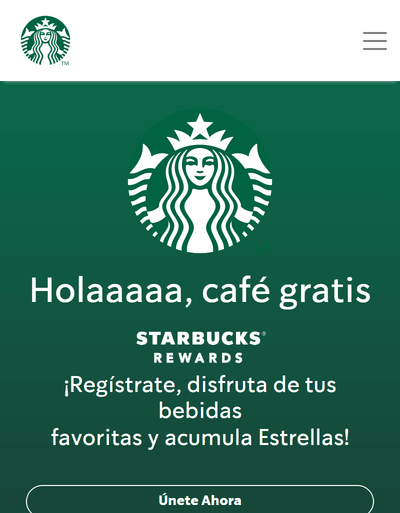

Hick's Law
Dior
Dior.comHick's Law Hick's law use the "Keep it Simple" principle to avoid overwhelming potential users or website visitors. Dior website is and example of this design principle, because it uses a design that is really simple and organize, and it give to the coustumer a really consistent menu with simple and most important options.
proximity
Shoppe
shopee.comProximity is when element are putting together to create connection and be percived as related elements. Shopee website is and example of proximity design principle becuase elemets are agroup with proximity with its relatives creating sections.
contrast
Starbucks
starbucks.com Contrast is designing a distinct difference between foreground and background. Starbucks website is a contrast design priciple example, the website uses green and white colors in almost every visual element, two colors that make a lot of contrast with each other. One of the caracteristics of contrast disign principle is that it make something memorable for the viewers, in every part of the world the starbucks logo and the green color is easy related to the brand.